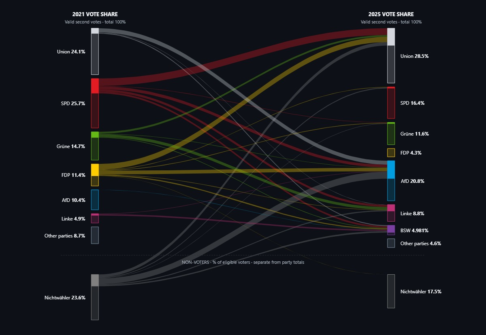
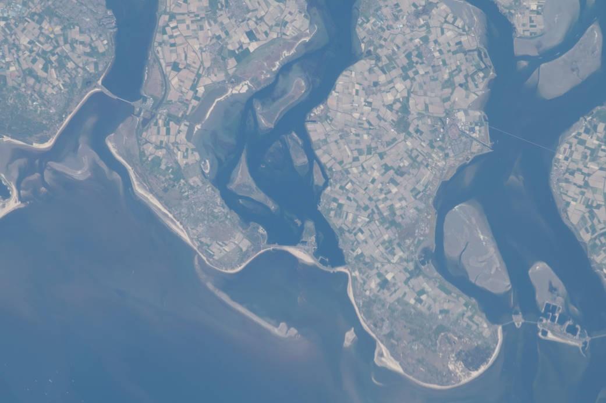
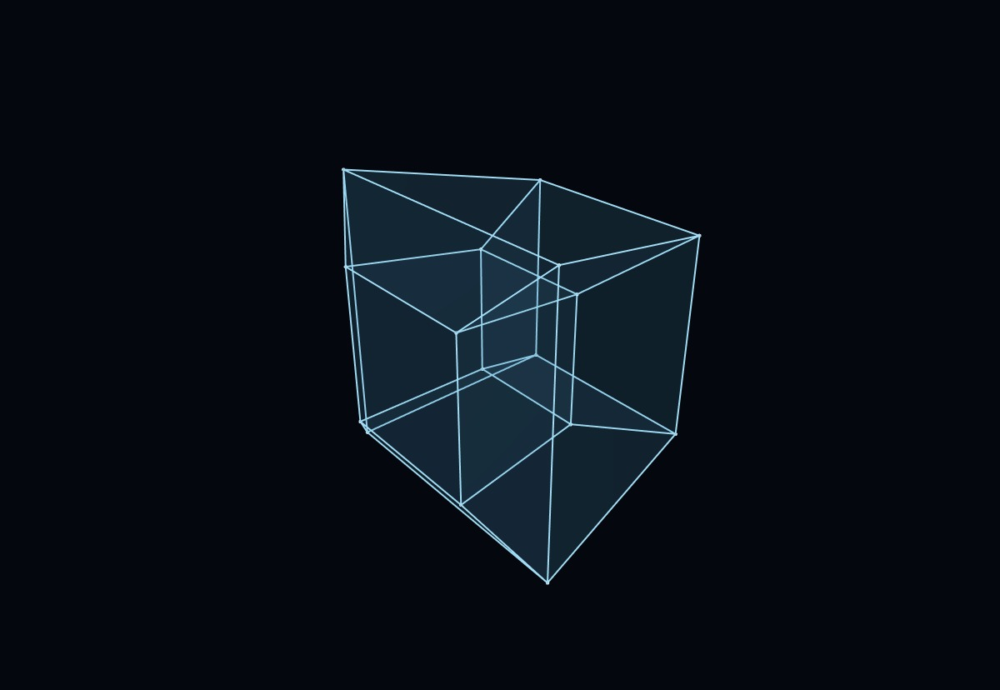
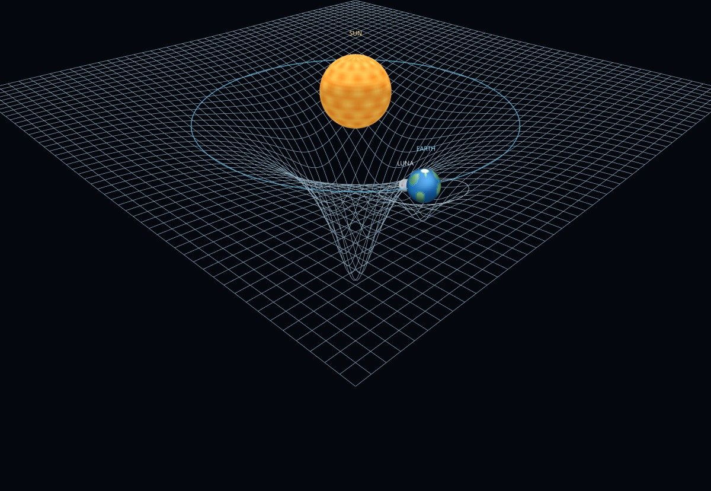
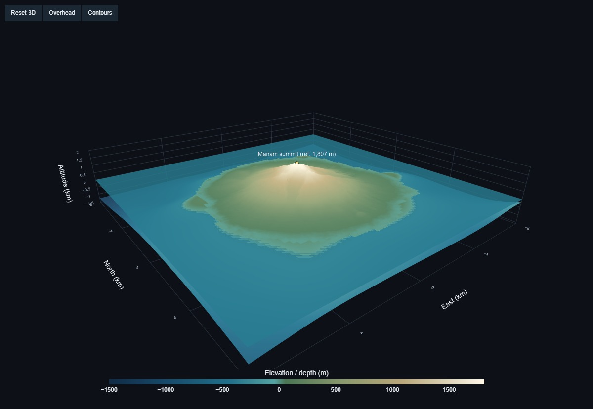
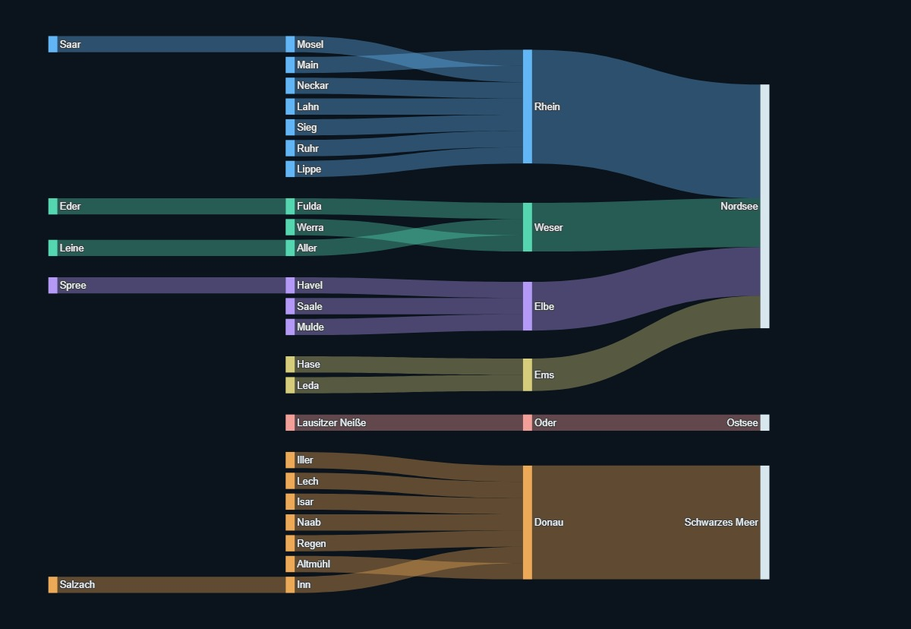
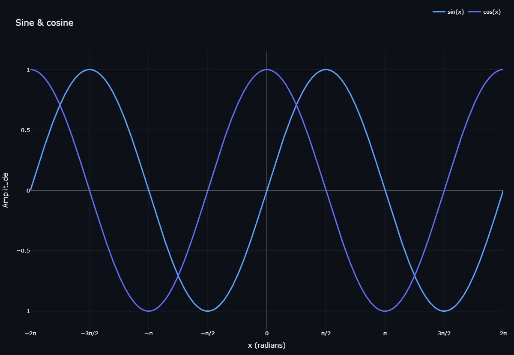

01 / Society
A changing electorate.
Explore voter flows in Germany’s federal election through a Sankey diagram. Follow the connections to see the detail behind the totals.
Explore Bundestag SankeyExploring the connections between data, science, and the world around us.
Discover phey.app
phey.app is a personal space for exploring ideas through data. From the paths of rivers to the geometry of gravity, these projects make complex relationships visible and invite you to look closer.
Explore the collection
Different questions. New perspectives.
Each project is an invitation to explore.

01 / Society
Explore voter flows in Germany’s federal election through a Sankey diagram. Follow the connections to see the detail behind the totals.
Explore Bundestag Sankey
02 / Geometry
Meet the tesseract: a four-dimensional cube seen through a three-dimensional projection. Rotate it to discover how its edges connect.
Explore Tesseract
03 / Physics
Explore a moving model of the Sun, Earth, and Moon, and the geometry of a gravitational well. Change the view and investigate the motion.
Explore Gravity
04 / Topography
Explore Manam through real elevation and bathymetry. Turn the volcanic island in three dimensions, follow its contours, and see the sea floor surrounding it.
Explore Manam 3D
05 / Geography
Follow Germany’s rivers through a network of tributaries, confluences, and drainage basins. A different way to see how a landscape connects.
Explore German Rivers
06 / Data exploration
An interactive line plot and a simple invitation to explore: zoom in, inspect individual points, and find the patterns in the data.
Explore Interactive Line PlotExplore the notebooks, follow the methods, and see how each visualization takes shape.
Explore the source on GitHubEarth imagery: NASA/Goddard Space Flight Center Scientific Visualization Studio. Blue Marble data courtesy of Reto Stöckli (NASA/GSFC).